монстры
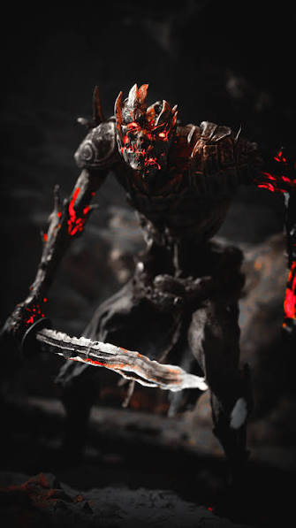
драугр-частые враги, ожившие мертвецы, которые умеют воспламеняться
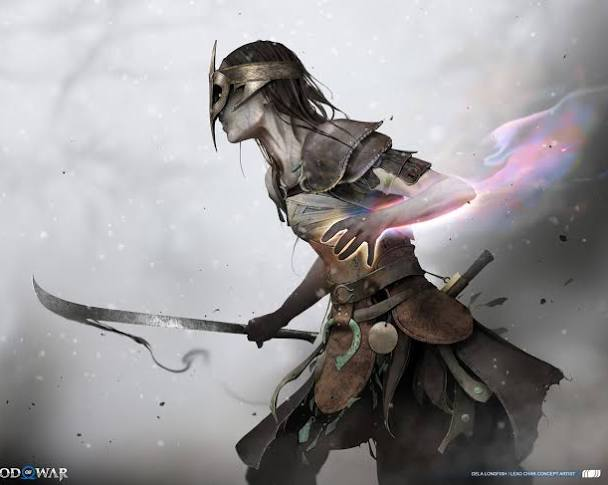
энхерии-павшие воины, армия Одина, атакующая магией Биврёста
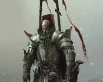
скитальцы-тяжелые рыцари с огромными двуручными мечами и непробиваемой броней, которых невозможно сбить с ног или прервать их атаки.
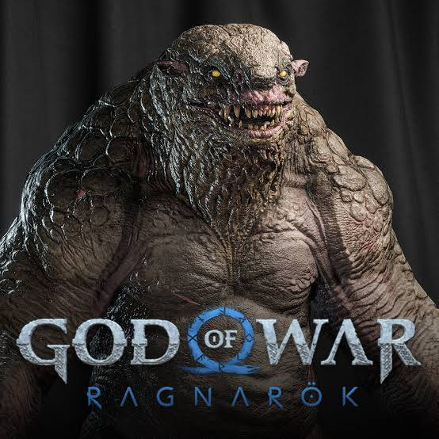
Бергсрас- крупные четырехногие чудовища, которые плюются едким ядом, выпускают удушливый дым и порождают мелких взрывных гадюк.
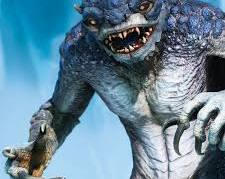
гримсы-прыгучие амфибии-ящерицы, которые плюются кислотой
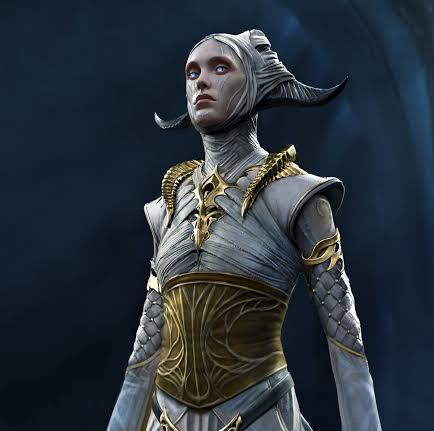
эльфы-жители Альвхейма, где Темные ослепляют магией, а Светлые быстро бьют мечами.
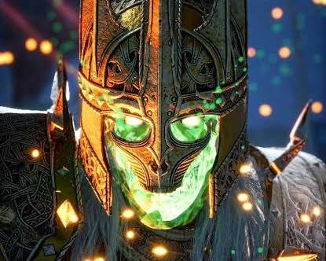
берсерки- души сильнейших воинов короля Хрольфа, выступающие в роли сложнейших боссов.
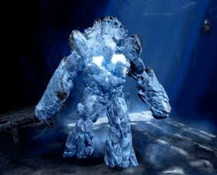
древние-големы из плоти Имира, уязвимые только при открытии ядра в груди
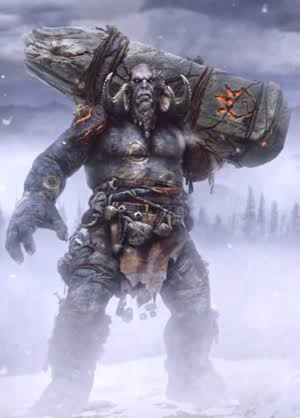
тролли-великаны, бьющие Кратоса огромными каменными столбами-тотемами
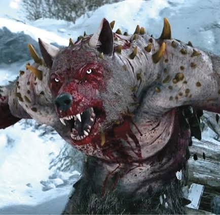
оборотни-свирепые полуволки, атакующие стремительными сериями когтей в ярости.
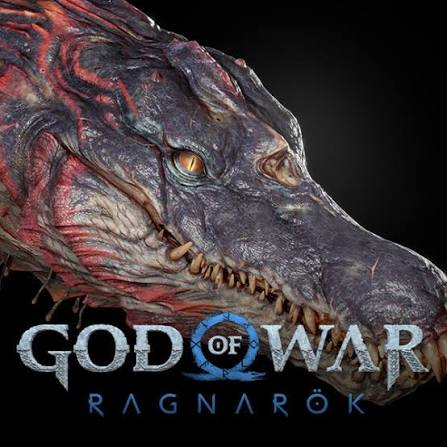
дреки-крупные рептилии-крокодилы, бьющие током и хвостом в водоемах.
персонажи
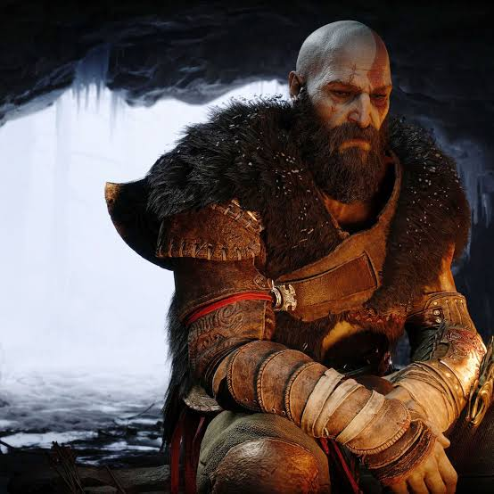
Кратос
Главный персонаж за которого мы играем, он появляется в скандинавии чтобы забыть свое темное прошлое но не выходит потому что для защиты сына и себя он убивает всех кто мешает или угрожает жизни сына
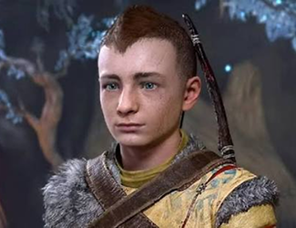
Атрей
сын кратоса за которого мы также играем в рагнареке но часто является компаньеном, так же известен в асгарде как Локи, бог обмана, так же он являеется полу великаном из рота Ванов что являются врагами Асов или же Асгардцев
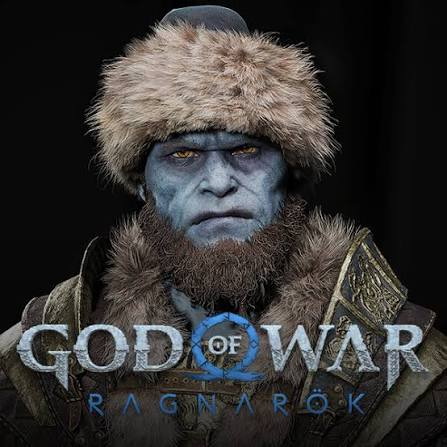
Брок
один из главных персонажев что несет огромную роль в игре, но убивается Одином изза того что много говорил, сам он являеется очень прямым
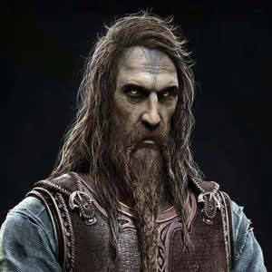
Тюр
персонаж которого хотел увидеть атрей да бы узнать о своей судьбе, но все это время это был не он а Один в облике Тюра, настоящего Тюра мы находим вне сюжета, собствено один в его теле и убивает брока
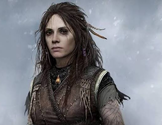
Фрея
после того как кратос убивает бальдра в игре 2018 (или же бог войны 4) начинает охоту на кратоса чтобы отомстить, но после того как кратос помогает ей освободиться от заклятья одина она прощает его и станновится союзником
Босы
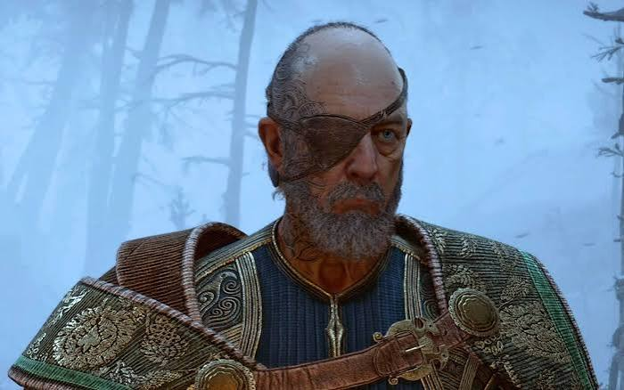
Один (Óðinn)
тот кто под предлогом спасение оказался замым злым и плохим персонажем, он использует других, в своих целях даже собственого сына
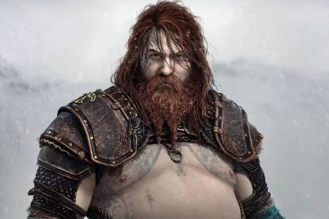
Тор (Þór)
сын Одина который умирает от его же рук после того как Тор осознал что Один его использует, даже в финале из уст одина выходит фраза "Я думаю- ты бьешь" но один понял что в честом бою против Тора он не выиграет и убил его из подишка пробив его грудь копьем, на глазах у дочери Тора-Труд
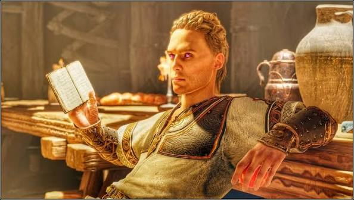
Хеймдаль (Heimdallur)
самоувереный, бог который владеет силой предсказывать следуйщие несколько секунд и убить его дело сложное но в бою с Кратосом его самоувереность его и погубила, он хотел убить атрея так как не доверял ему потому что он ван а он Асс а они враждуют с давних времен
информация
God of War Ragnarök — приключенческая экшен-игра от Santa Monica Studio, выпущенная Sony Interactive Entertainment 9 ноября 2022 года. Она является продолжением God of War 2018 года. Главными героями являются Кратос и его сын Атрей, которые живут в мире скандинавской мифологии. После событий первой части начинается Фимбулвинтер — великий мороз, предшествующий Рагнарёку. Кратос и Атрей отправляются в путешествие по Девяти мирам, встречая богов и существ скандинавской мифологии, среди которых Тор, Один и Фрейя. В игре есть сражения, головоломки, исследование мира, прокачка оружия и брони, побочные задания и множество боссов. Игра вышла на PS4 и PS5, а позже получила версию для ПК. После прохождения основной истории доступно бесплатное дополнение God of War Ragnarök: Valhalla, посвящённое испытаниям Кратоса и его прошлому.
Оружие
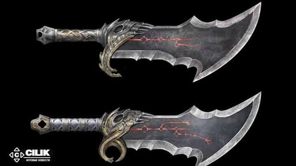
Клинки Хаоса
клинки являются напоминанием кратосу о сотрудничистве с Аресом но так же напоминают о Рабстве и сколько бы кратос не птылася избавится от них он пытался выкинуть их но после сна они сами оказывались на его руках
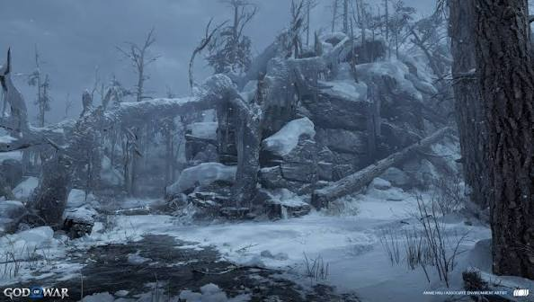
Левиафан
он был создан братьями Синдри и Броком чтобы востановить справедливость так как они же сделали молот Тора устроив геноцид великанов изначально топор пренадлежал жене кратоса Фей но после ее смерти топор отдался кратосу
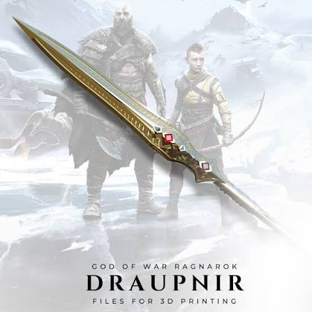